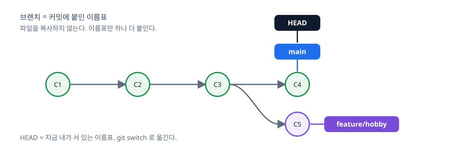

1장 · Git과 GitHub로 협업하기Git과 GitHub는 왜 첫 장인가용어 정리 — 이 장에서 처음 만나는 말설치와 첫 설정 — Git Bash와 GitHub 계정커밋은 사진 한 장 — 작업 폴더 · 스테이징 · 저장소따라하기 — 첫 저장소와 첫 커밋브랜치는 이름표 — switch와 mergeGitHub와 원격 저장소 — push · clone · fetch · pull따라하기 — 충돌은 고장이 아니라 대화 요청Pull Request와 GitHub Flow — 합쳐 달라는 요청서GitHub Organizations — 우리 과정의 팀 저장소올리면 안 되는 것과 되돌리기 — .gitignore · restore · revert강사 코드 태그로 따라잡기 — clone · tag · switch --detach정리와 체크리스트실습문제와 힌트 — 기본 · 필수 · 도전
1장. Git과 GitHub로 협업하기
브랜치는 이름표 — switch와 merge
한 줄 요약
브랜치는 커밋을 가리키는 이름(이름표)입니다. 파일을 복사하지 않습니다. 이름표를 하나 더 만들어 갈림길에서 마음껏 작업하고, 끝나면 main에 합칩니다(merge).
1. 브랜치는 이름표다

| 용어 | 뜻 |
|---|---|
| 브랜치 | 커밋 하나를 가리키는 이름. 새 커밋을 만들면 그 커밋으로 자동으로 옮겨 간다 |
main |
완성된 코드를 모아 두는 기본 브랜치 |
HEAD |
지금 내가 서 있는 브랜치(또는 커밋)를 가리키는 표시 |
main에서 직접 작업하지 않습니다. 기능마다 브랜치를 만들고, 끝나면 합칩니다. 갈림길에서 코드를 망가뜨려도 main은 멀쩡합니다.
2. 따라하기 — 브랜치 만들고 이동하기
5절의 my-first-repo에서 이어 합니다.
$ git switch -c feature/hobby
$ git branch
실행 결과
Switched to a new branch 'feature/hobby'
* feature/hobby
main
*가 지금 서 있는 브랜치입니다. 여기서 커밋을 하나 찍습니다.
$ printf '취미: 등산\n' >> README.md
$ git add README.md
$ git commit -m "docs: 취미 추가"
$ git log --oneline --graph --all
* 73ed024 (HEAD -> feature/hobby) docs: 취미 추가
* 310a2ea (main) chore: 메모 삭제
* 5c1d0b7 docs: 메모 추가
* ef983ad docs: 목표 추가
* 932e50d docs: 자기소개 README 추가
이제 main으로 돌아가 README를 봅니다.
$ git switch main
$ cat README.md
# 자기소개
이름: 나학생
목표: 풀스택 개발자
취미 줄이 없습니다. 위 결과에서 (main)이 아직 310a2ea(예전 커밋)를 가리키고 있기 때문입니다.
3. 합치기 — git merge
$ git merge feature/hobby
실행 결과
Updating 310a2ea..73ed024
Fast-forward
README.md | 1 +
1 file changed, 1 insertion(+)
Fast-forward는 main이 그동안 움직이지 않아서, 이름표만 앞으로 옮겼다는 뜻입니다. 두 갈림길이 모두 움직였다면 Git이 새로운 "합친 사진(merge commit)"을 찍습니다.
4. checkout과 switch
인터넷 자료에는 git checkout 브랜치가 많이 나옵니다. Git 2.23(2019)부터 checkout이 하던 두 가지 일을 switch(브랜치 이동)와 restore(파일 되돌리기)로 나눴습니다. (Git 2.23 릴리스 노트)
| 예전 방식 | 이 과정에서 쓰는 방식 |
|---|---|
git checkout feature/a |
git switch feature/a |
git checkout -b feature/a |
git switch -c feature/a |
git checkout -- 파일 |
git restore 파일 |
뜻은 같으니, checkout이 나오면 위 표로 바꿔 읽으면 됩니다.
핵심 정리
- 브랜치는 커밋을 가리키는 이름표다.
git switch -c 이름으로 만들고 이동,git switch 이름으로 이동.git merge 브랜치로 지금 브랜치에 합친다.main에서 직접 작업하지 않는다.